Aplicações completas, responsivas e integradas.
Posicionamento
Web & Data Developer
Web & Data Developer.
Desenvolvimento web e análise de dados com foco em soluções úteis, claras e escaláveis.
Estruturas consistentes para sistemas conectados.
Indicadores claros para apoiar decisões.
Sobre
Desenvolvimento web e análise de dados.
Construo aplicações web, APIs e análises de dados com foco em eficiência, clareza e geração de valor.
Interfaces modernas e backends estruturados.
Tratamento, leitura e interpretação de dados.
Soluções alinhadas a objetivos e prazos.
Stack
Ferramentas principais.
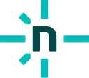
Netlify Deploy webProjetos
Projetos em destaque.
Amigo Solidário
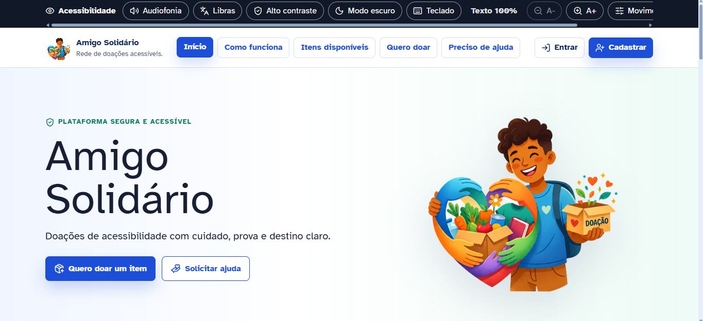
Service Desk STI
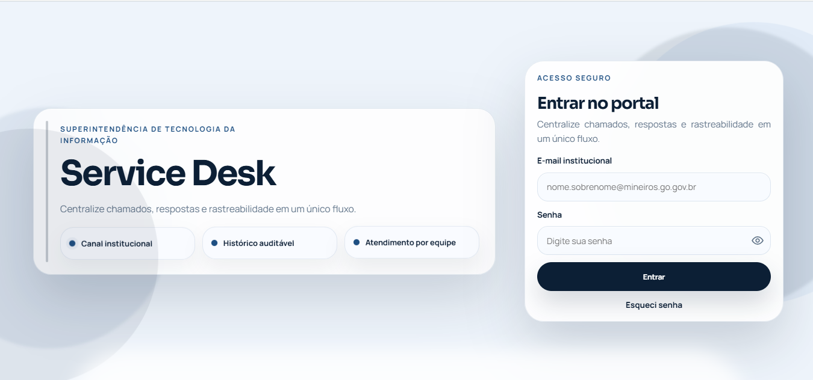
Barbearia CH Site Oficial
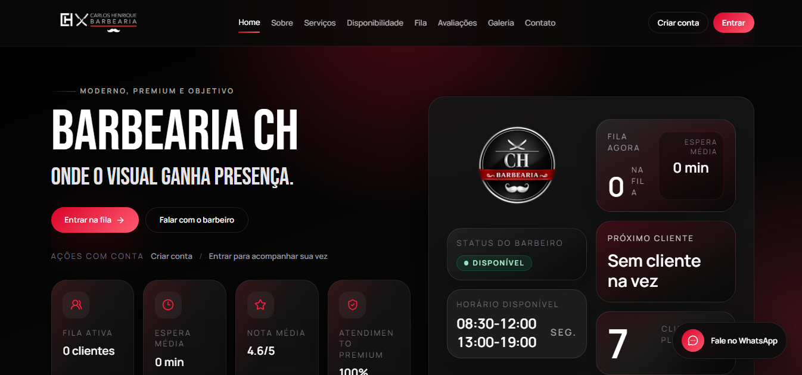
Barbearia CH Landing Page
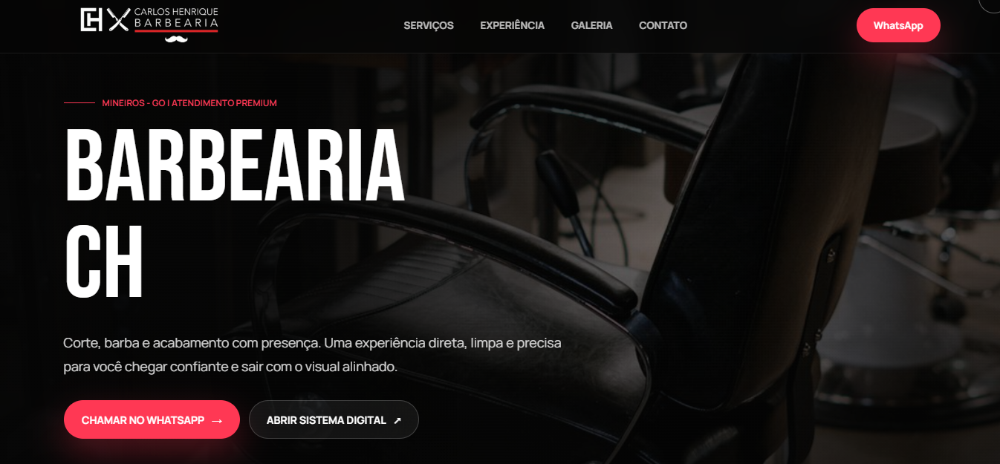
Raio-X Emocional PSI
Projetos publicados em Vercel e Netlify.
Abrir GitHubÁreas de atuação
Onde posso contribuir.
Sites com interfaces
Experiências claras, profissionais e responsivas.
Backends e APIs
Rotas, regras de negócio e integração entre sistemas.
Análise de dados
Tratamento, consultas e leitura de indicadores.
Modelagem de dados
Estruturas consistentes para aplicações web.
Banco de dados
PostgreSQL e MySQL para persistência, consultas e organização.
Deploy e ambientes
Publicação, hospedagem e ambientes consistentes para entrega.
Formação
Evolução acadêmica e profissional.
Certificados
Complementos técnicos aplicados ao desenvolvimento e dados.
4 registros
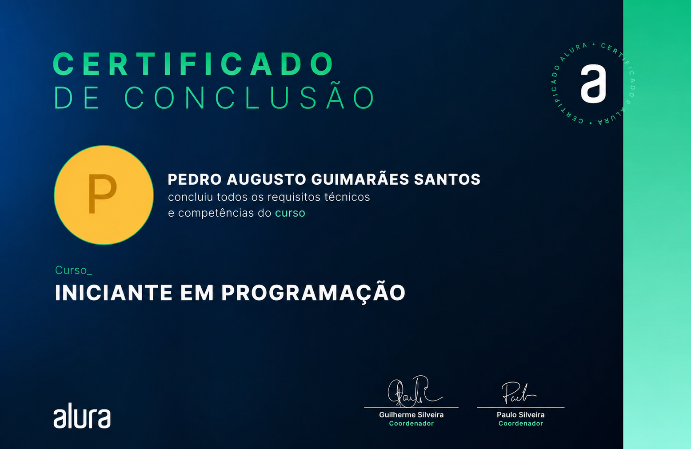
Iniciante em Programação
Alura
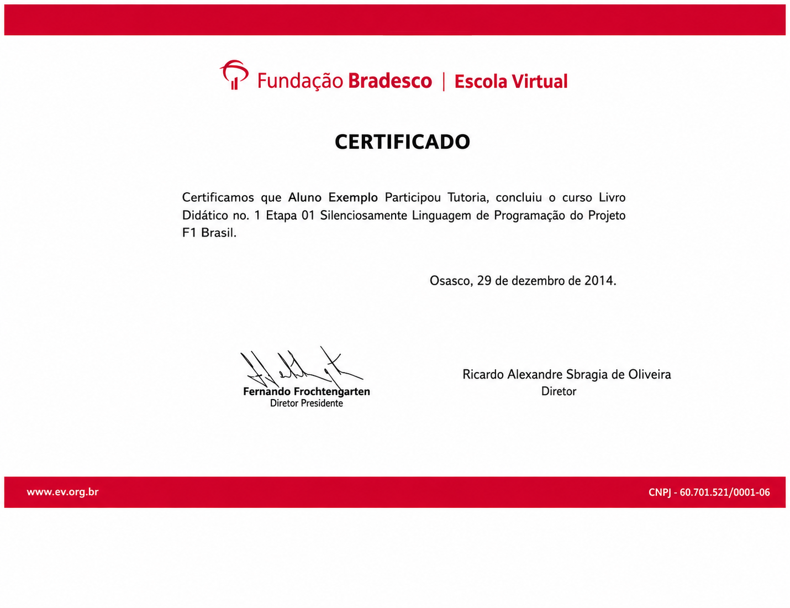
Fundação Bradesco
Escola Virtual
Google Cybersecurity
Coursera
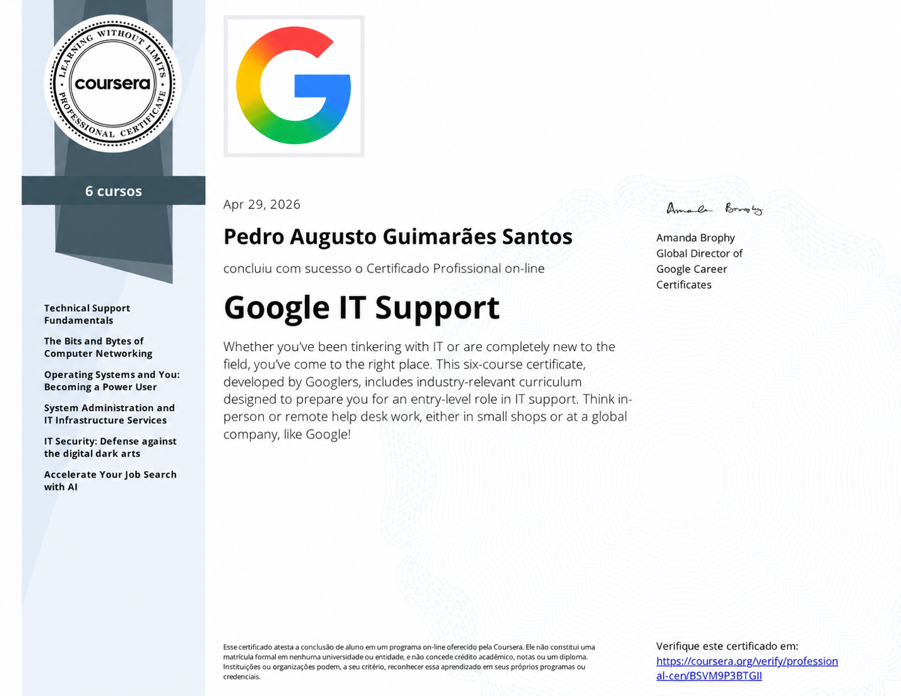
Google IT Support
Coursera
Formações
Base acadêmica conectada à evolução técnica.
2 registros
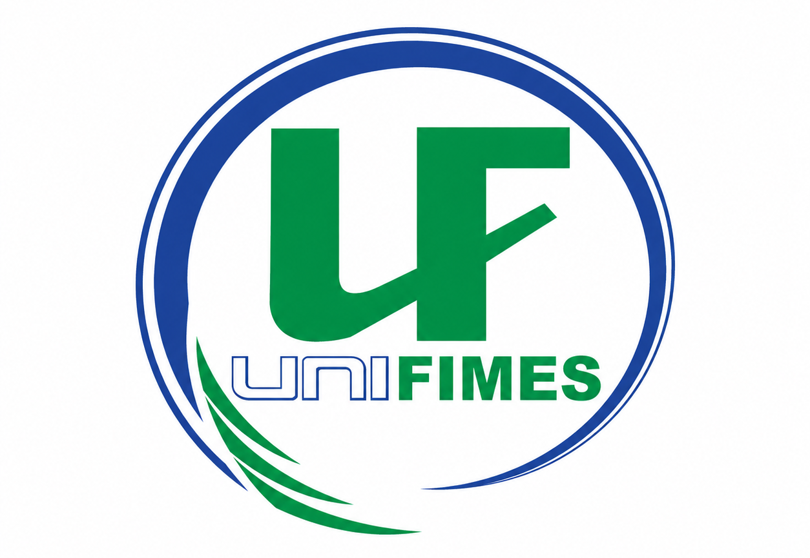
UNIFIMES
Formação acadêmica e fundamentos técnicos.
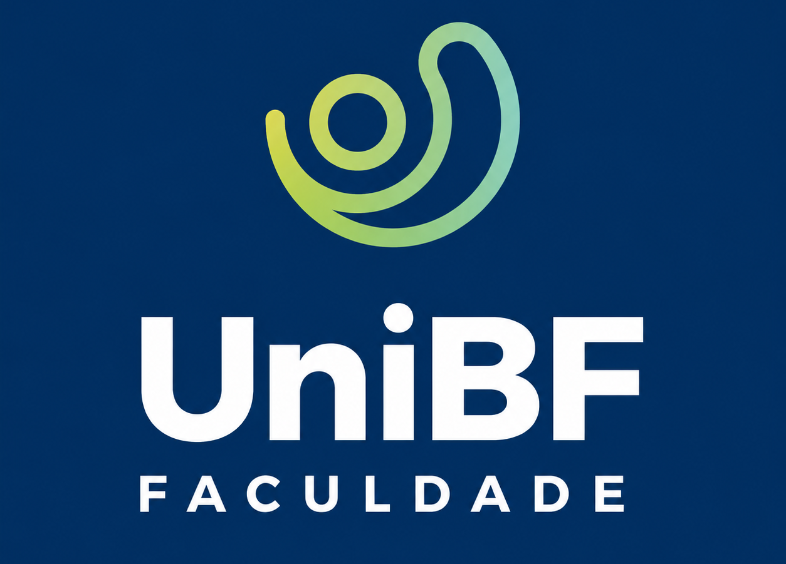
UniBF
Complementação e desenvolvimento profissional.
Experiências
Vivências com processos, dados e tecnologia.
3 registros
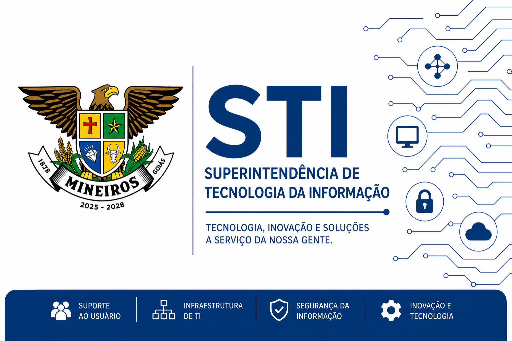
STI
Suporte técnico e soluções internas.
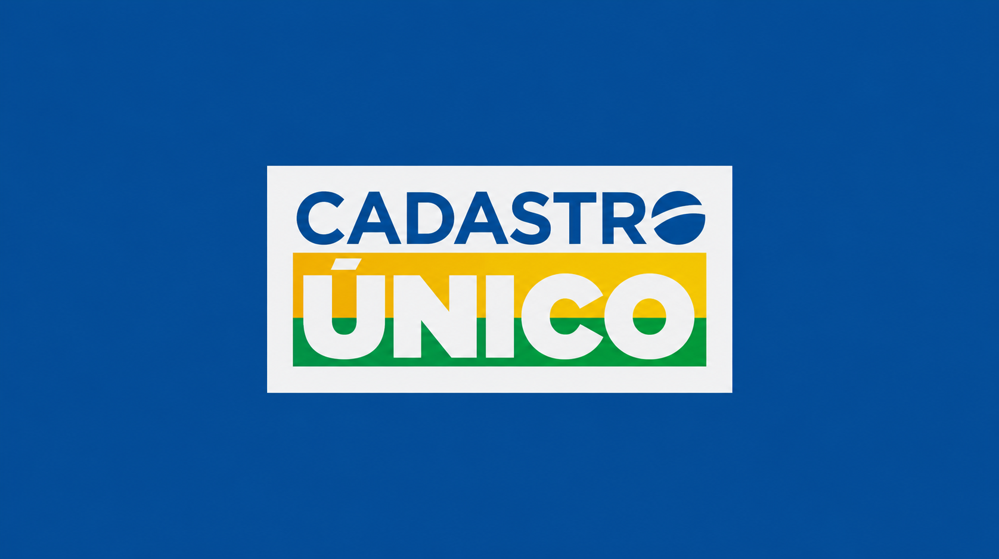
Cadastro Único
Atendimento, dados e processos.
Câmara Municipal
Rotinas institucionais e organização.
Objetivo
Gerar impacto com tecnologia.
Busco oportunidades em desenvolvimento web e análise de dados, contribuindo com produto, processos e decisões.
Contato
Vamos construir algo útil?
Aberto a oportunidades em desenvolvimento web, análise de dados e projetos com impacto real.
Disponível para estágio, vagas e projetos